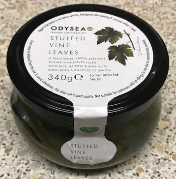

Falafels
- Blend in food processor
- 400g tin chick peas
- ½ onion finely chopped
- 1 clove garlic finely chopped
- 1 tsp ground cumin
- 1 tsp ground coriander
- ½ tsp cinnamon
- small handful chopped fresh coriander
- small handful chopped parsley
- 2 tbsp wholemeal flour
- splash of lemon juice
- Shape into burgers
- Fry in sunflower oil for 2-3 mins on both sides until brown and crispy
- Drain on paper
- pittas, wraps
- tzatziki, humous, tahini, tomato salsa
- lettuce, tomatoes, cucumber, pomegranate, pickled turnip / beetroot
- Try air frying
- Plenty of oil gives falafels more flavour and colour
- Use largest ring of cooker for frying pan
- More spice better than too little
